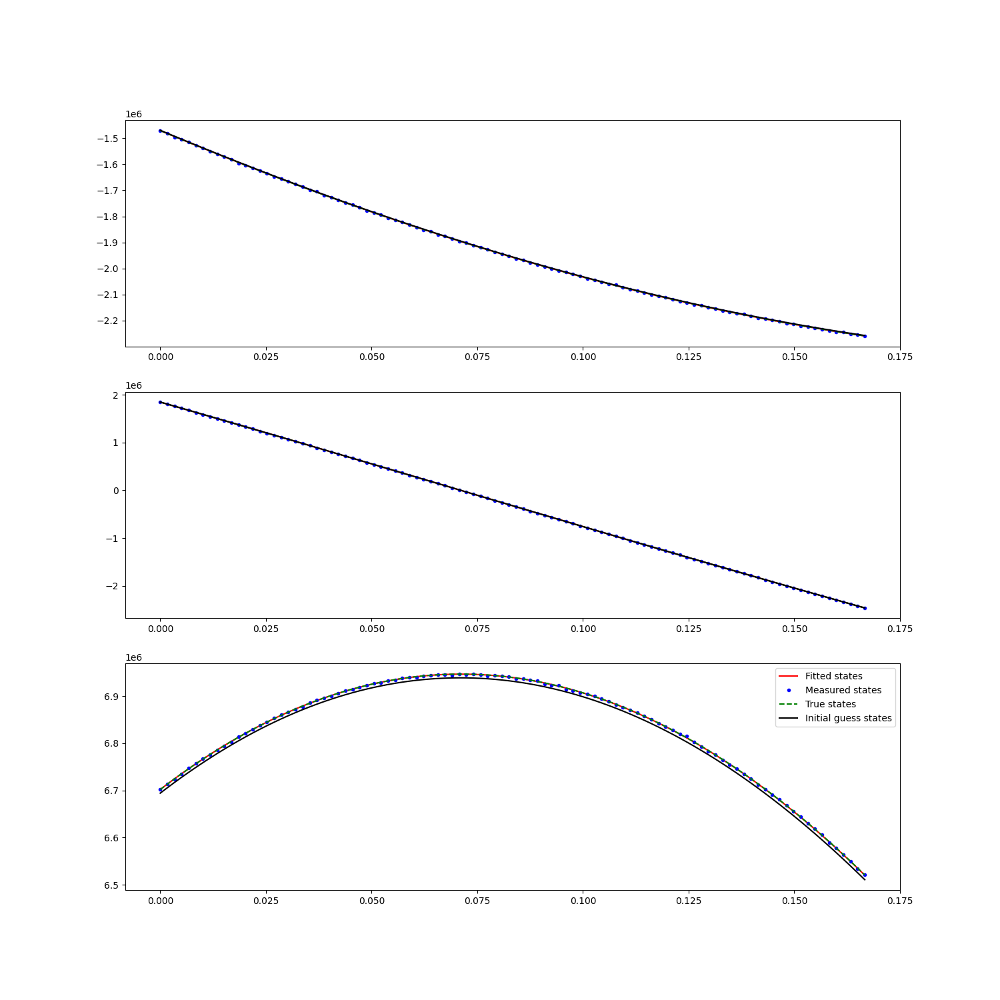
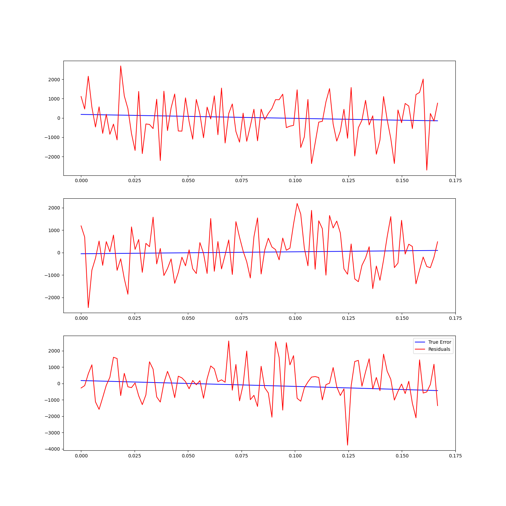

Note
Click here to download the full example code
Fitting SGP4 mean elements¶


Out:
a : 7.2000e+06 x : -1.4704e+06
e : 5.0000e-02 y : 1.8466e+06
i : 7.5000e+01 z : 6.7018e+06
omega: 0.0000e+00 vx: -1.8908e+03
Omega: 7.9000e+01 vy: -7.0432e+03
anom : 7.2000e+01 vz: 1.9114e+03
final_simplex: (array([[7.21004288e+06, 5.03821879e-02, 7.50087491e+01, 7.89892697e+01,
3.26434039e-01, 7.16641622e+01],
[7.21004288e+06, 5.03821879e-02, 7.50087491e+01, 7.89892697e+01,
3.26434039e-01, 7.16641622e+01],
[7.21004288e+06, 5.03821879e-02, 7.50087491e+01, 7.89892697e+01,
3.26434039e-01, 7.16641622e+01],
[7.21004288e+06, 5.03821879e-02, 7.50087491e+01, 7.89892697e+01,
3.26434039e-01, 7.16641622e+01],
[7.21004288e+06, 5.03821879e-02, 7.50087491e+01, 7.89892697e+01,
3.26434039e-01, 7.16641622e+01],
[7.21004288e+06, 5.03821879e-02, 7.50087491e+01, 7.89892697e+01,
3.26434039e-01, 7.16641622e+01],
[7.21004288e+06, 5.03821879e-02, 7.50087491e+01, 7.89892697e+01,
3.26434039e-01, 7.16641622e+01]]), array([163589.69816966, 163589.69816967, 163589.69816967, 163589.69816967,
163589.69816967, 163589.69816967, 163589.69816967]))
fun: 163589.698169662
message: 'Optimization terminated successfully.'
nfev: 1735
nit: 1007
status: 0
success: True
x: array([7.21004288e+06, 5.03821879e-02, 7.50087491e+01, 7.89892697e+01,
3.26434039e-01, 7.16641622e+01])
Initial guess
7200000.00 m 0.05 75.00 deg 79.00 deg 0.00 deg 72.00 deg
Least squares fit
7210042.88 m 0.05 75.01 deg 78.99 deg 0.33 deg 71.66 deg
import numpy as np
import scipy.optimize as sio
import matplotlib.pyplot as plt
import pyorb
from sorts.propagator import SGP4
#reproducibility
np.random.seed(324245)
prop = SGP4(
settings = dict(
in_frame='TEME',
out_frame='TEME',
),
)
std_pos = 1e3 #1km std noise on positions
orb = pyorb.Orbit(M0 = pyorb.M_earth, direct_update=True, auto_update=True, degrees=True, a=7200e3, e=0.05, i=75, omega=0, Omega=79, anom=72, type='mean')
print(orb)
state0 = orb.cartesian[:,0]
t = np.linspace(0,600.0,num=100)
mjd0 = 53005
params = dict(A=1.0, C_R=1.0, C_D=2.3)
states = prop.propagate(t, state0, mjd0, **params)
noisy_pos = states[:3,:] + np.random.randn(3,len(t))*std_pos
#now for the least squares function to minimize
def lsq(mean_elements):
states = prop.propagate(t, mean_elements, mjd0, SGP4_mean_elements=True, **params)
rv_diff = np.linalg.norm(noisy_pos - states[:3,:], axis=0)
return rv_diff.sum()
#initial guess is just kepler elements
mean0 = orb.kepler[:,0]
#The order is different (and remember its mean anomaly), but we still use SI units
tmp = mean0[4]
mean0[4] = mean0[3]
mean0[3] = tmp
res = sio.minimize(lsq, mean0, method='Nelder-Mead', options={'ftol': 1e-8, 'maxfev': 10000})
print(res)
initial_states = prop.propagate(t, mean0, mjd0, SGP4_mean_elements=True, **params)
final_states = prop.propagate(t, res.x, mjd0, SGP4_mean_elements=True, **params)
print('Initial guess')
print(' '.join([f'{x:.2f} {unit}' for x,unit in zip(mean0, ['m','','deg','deg','deg','deg'])]))
print('\nLeast squares fit')
print(' '.join([f'{x:.2f} {unit}' for x,unit in zip(res.x, ['m','','deg','deg','deg','deg'])]))
fig = plt.figure(figsize=(15,15))
for i in range(3):
ax = fig.add_subplot(311 + i)
ax.plot(t/3600.0, final_states[i,:], '-r', label='Fitted states')
ax.plot(t/3600.0, noisy_pos[i,:], '.b', label='Measured states')
ax.plot(t/3600.0, states[i,:], '--g', label='True states')
ax.plot(t/3600.0, initial_states[i,:], '-k', label='Initial guess states')
ax.legend()
fig = plt.figure(figsize=(15,15))
for i in range(3):
ax = fig.add_subplot(311 + i)
ax.plot(t/3600.0, final_states[i,:] - states[i,:], '-b', label='True Error')
ax.plot(t/3600.0, final_states[i,:] - noisy_pos[i,:], '-r', label='Residuals')
ax.legend()
plt.show()
Total running time of the script: ( 0 minutes 2.448 seconds)